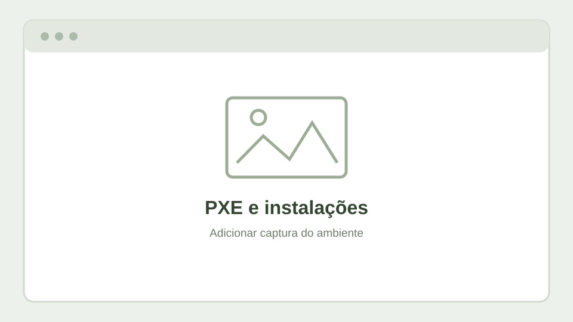

Projetos de experimentação
Laboratório retro
Testes com Windows NT, Windows 2000 e redes isoladas.
Explorar →Arranque pela rede
Instalações e recuperação de sistemas com PXE / iVentoy.
Explorar →Eletrónica experimental
ESP32, DSP, displays redondos e áudio digital.
Explorar →Energia e UPS
Continuidade de alimentação e monitorização de UPS.
Explorar →Laboratório retro — Windows NT 4.0
Nem todas as experiências precisam de começar com o sistema operativo mais recente. Uma das partes mais interessantes deste laboratório é recuperar versões que marcaram uma época e fazê-las arrancar novamente num ambiente de virtualização atual. O Windows NT 4.0 é um bom exemplo: tem uma interface familiar para quem utilizou computadores nos anos 90, mas foi criado para máquinas e periféricos muito diferentes dos atuais.


Quando o driver vinha numa disquete
Instalar o sistema operativo foi apenas parte do trabalho. Para colocar a rede a funcionar, foi necessário procurar um controlador compatível com o hardware virtual apresentado à VM. E aqui surgiu uma pequena viagem no tempo: o Windows NT não tinha os mecanismos de deteção e instalação automática de drivers a que estamos habituados hoje.
A solução passou por preparar uma imagem de disquete virtual com o driver, associá-la à máquina virtual através do Proxmox e indicar ao Windows NT onde procurar o controlador. Era uma forma de simular, com ferramentas atuais, o processo que se fazia com disquetes físicas. Assim, o sistema antigo pôde obter os ficheiros de instalação sem depender de uma drive real.
Uma dificuldade que se transforma em aprendizagem
- Escolher o hardware virtual: um sistema antigo pode reconhecer apenas certos modelos de placas e controladores.
- Encontrar o driver adequado: a compatibilidade depende do sistema operativo e do dispositivo emulado.
- Criar o suporte de instalação: neste caso, uma imagem de disquete carregada no Proxmox.
- Testar e guardar o resultado: depois de funcionar, um snapshot permite conservar esse ponto de partida.
Esta experiência mostra a verdadeira vantagem de um laboratório virtual: podemos experimentar, errar, voltar atrás e repetir o procedimento sem ocupar um computador antigo nem colocar o sistema principal em risco. A virtualização facilita muito o trabalho, mas não faz desaparecer todas as limitações dos sistemas históricos — e é precisamente aí que se aprende mais.
Arranque pela rede e recuperação
Experiências com PXE, servidores de arranque e organização de imagens ISO para instalação ou manutenção de sistemas.

Eletrónica experimental
Um espaço dedicado a protótipos com ESP32, displays TFT circulares, processamento digital de áudio e indicadores inspirados no Hi-Fi clássico. A história está contada como um diário de desenvolvimento: o que já existe, o que ainda falta testar e porque é interessante explorar cada etapa.
UPS e continuidade de serviço
Testes de comunicação com UPS, integração com sistemas de monitorização e análise de estratégias de desligamento controlado. Alguns ensaios ainda se encontram em desenvolvimento.